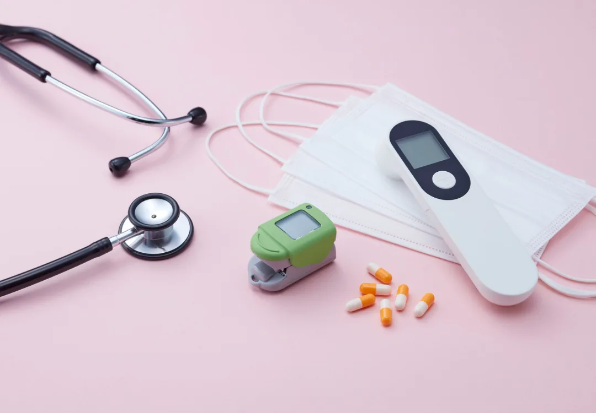

TELEMEDICINE
Telemedicine Visits
See Dr. Islam by secure video for sick visits, follow-ups, and refills — no commute, no waiting room, available across New York.
Learn more →
Jumpstart Medical offers comprehensive primary, urgent, and telemedicine care for adults — from wellness visits and joint injections to EKGs, weight loss, and no-fault insurance visits — led by Dr. Shalena Islam.

At Jumpstart Medical, Dr. Shalena Islam builds real relationships with her patients. A board-certified family physician affiliated with Long Island Jewish Medical Center, she has cared for Flushing families since 2013.
From routine wellness and sick visits to weight management, minor injuries, and chronic-condition care, you get thorough, unhurried attention — in the language you're most comfortable speaking.
In the office, same-day, or on screen — Jumpstart Medical meets you where you are.

Wellness exams, screenings, and chronic-care management to keep you healthy year-round.

Walk-in care for fevers, infections, and minor injuries — often seen the same day.

Secure video visits with Dr. Islam from home, work, or anywhere in New York.
Can't make it into the office? Our secure telehealth platform connects you with Dr. Shalena Islam by video for a wide range of conditions — no commute, no waiting room, the same expert care.
Comprehensive care for adults — in person in Flushing or virtually, all under one roof.
See Dr. Islam by secure video for sick visits, follow-ups, and refills — no commute, no waiting room, available across New York.
Learn more →
Same-day and walk-in care for fevers, infections, minor injuries, and conditions that need prompt attention.
Learn more →Annual physicals, wellness exams, screenings, and personalized plans to keep you healthy for the long run.
Learn more →
Ongoing care for diabetes, hypertension, high cholesterol, thyroid conditions, and more.
Learn more →
Medically supervised weight loss with GLP-1 options like Wegovy, Ozempic, Mounjaro, and Zepbound, plus weekly check-ins.
Learn more →
In-office heart-rhythm testing to evaluate palpitations, chest discomfort, and cardiac risk.
Learn more →
Quick vision screening to check acuity and flag changes that may need a specialist referral.
Learn more →
Pre-operative evaluations and medical clearance so your upcoming procedure stays on schedule.
Learn more →
Medical evaluation for motor-vehicle-accident injuries, billed directly to your NY no-fault (PIP) insurer.
Learn more →
Well-woman visits, screenings, and preventive care in a comfortable, respectful setting.
Learn more →
Routine checkups, screenings, and preventive care tailored to men's health at every age.
Learn more →
In-office blood draws and lab testing so results are reviewed with you quickly and clearly.
Learn more →
Attentive, patient care for older adults — medication reviews, chronic care, and coordination.
Learn more →
Guidance on lifestyle, nutrition, and managing conditions so you feel supported at every step.
Learn more →New York no-fault (PIP) insurance covers your medical care after a car accident — regardless of who was at fault. We evaluate your injuries and bill the insurer directly, so you can focus on recovery.
At Jumpstart Medical, we believe primary care should be accessible, comprehensive, and deeply personal — whether you're in our office or at home.
Our patients say it best — rated 5.0 across dozens of reviews.
Walk in or book ahead — acute care when you need it.
Convenient, easy to reach, and welcoming — with same-day appointments and walk-ins during office hours.
Real experiences from patients across Flushing and Queens.
“Dr. Islam is thorough and truly listens. She took time to explain everything and never made me feel rushed — the whole staff is warm and welcoming.”
“Booked a same-day urgent care visit for my son and we were seen right away. Clean office, kind team, and no long wait. Highly recommend.”
“I started my weight loss program here and the weekly check-ins keep me on track. Dr. Islam actually cares about the results.”
In-person care in Flushing and telemedicine across New York State.
We work with most major medical and no-fault plans across New York City. Not sure about yours? We'll verify it for you.
You book online or by phone, then connect with Dr. Islam over a secure video link at your appointment time — no app download hassle and no waiting room. It's ideal for sick visits, follow-ups, prescription refills, and reviewing results. Telehealth is available to patients located anywhere in New York State.
Colds and flu, minor infections, rashes, allergies, prescription refills, medication questions, and chronic-condition check-ins are all a great fit. For anything that needs hands-on evaluation or lab work, we'll have you come into the Flushing office — often the same day.
Yes. Same-day and walk-in appointments are available for acute conditions during office hours. Calling ahead at (917) 932-2315 helps us reduce your wait, but walk-ins are always welcome.
New York no-fault (PIP) insurance covers medical expenses after a motor vehicle accident, regardless of who was at fault. Jumpstart Medical evaluates your injuries and bills the insurer directly — at no out-of-pocket cost to you.
Yes. We accept Medicare, Medicaid, and most major NYC commercial plans. Call (917) 932-2315 and we'll verify your coverage before your visit.
Absolutely. Jumpstart Medical is actively welcoming new adult patients for both in-person and telemedicine visits. Book on ZocDoc or call (917) 932-2315 to get started.
Book in-person in Flushing or start a telemedicine visit from anywhere in New York — same expert care, your way.